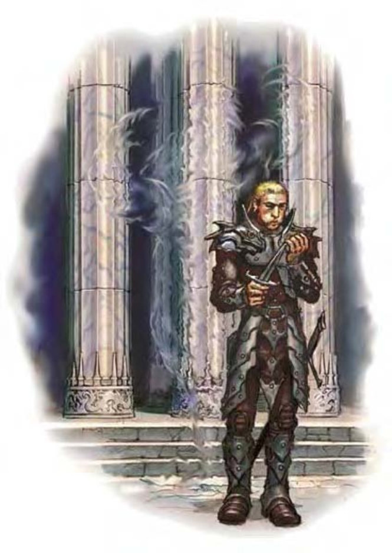

| 资料栏位 | 隐形潜伏怪 (Invisible Stalker) 大型元素 (风系、外界) |
| 生命骰 | 8d8+16 (52HP) |
| 先攻 | +8 |
| 速度 | 30英尺 (6格)、飞行30英尺 (灵活) |
| 防御等级 | 17 (-1体型、+4敏捷、+4天生)、接触13、措手不及13 |
| 基本攻击/擒抱 | +6 / +14 |
| 攻击 | 挥击+10近战 (2d6+4) |
| 全力攻击 | 2挥击+10近战 (2d6+4) |
| 占据/触及 | 10英尺 / 10英尺 |
| 特殊攻击 | ― |
| 特殊能力 | 黑暗视觉60英尺、元素特性、天生隐形、精通追踪 |
| 豁免 | 强韧+4、反射+10、意志+4 |
| 属性 | 力量18、敏捷19、体质14、智力14、感知15、魅力11 |
| 技能 | 聆听+13、潜行+15、搜索+13、侦察+13、生存+2 (追踪+4) |
| 专长 | 战斗反射、精通先攻、专攻武器 (挥击) |
| 环境 | 风元素界 |
| 组织 | 单独 |
| 挑战级数 | 7 |
| 宝藏 | 无 |
| 阵营 | 通常绝对中立 |
| 进化 | 9-12HD (大型)；13-24HD (超大型) |
| 等级修正值 | ― |
隐形潜伏怪是风元素界的原生生物。有时他们会被法师或术士召唤出来为他们执行特殊任务。
即使任务必须远赴数百千里外，被召唤来的隐形潜伏怪依旧会执行任何召唤者的命令。隐形潜伏怪会遵从命令直到任务结束，也只听从于召唤者，但是讨厌漫长或复杂的任务，因此会想办法曲解召唤者的指示。
隐形潜伏怪的形体不定。使用“识破隐形”只会看到一团云状的模糊轮廓，而使用“真实目光”则可见到一团流动的云状气体。
隐形潜伏怪只通晓风族语，但能听懂通用语。
战斗隐形潜伏怪使用风做为武器。他制造出一阵强烈疾风扑向单一目标，该目标必须与他位于同一界域。
隐形潜伏怪只有在风元素界才能被杀死。在他界执行任务时若受到足以毁灭他的伤害，也只会自动将他送回到原属界域。
天生隐形 (超自然)：这是一种恒定能力，使他即使在攻击时也能保持隐形。此为先天能力，并不受“消除隐形”法术的影响。
精通追踪 (特异)：隐形潜伏怪是完美的追踪者。他们在追踪生物踪迹时，进行的是“侦察”检定，而不是一般所进行的“生存”检定。